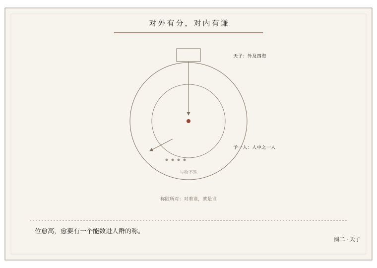

曲礼下 · 二·三十八 · 第 161 课
君临天下称「天子」；朝诸侯、分职、授政、任功，称「予一人」。注「皆摈者辞也。天子，谓外及四海也」。
说什么事：两句话，两个称：对外称天子，对内称予一人。
落在哪一层：礼。论称谓的分与谦。
为何编在此位：上节论去国与死守，此节转到天子之称。由臣之守，转君之名。
【经】君天下曰「天子」，朝諸侯、分職、授政、任功，曰「予一人」。
【注】皆擯者辭也。天子，謂外及四海也。今漢於蠻夷稱天子，於王侯稱皇帝。《覲禮》曰：「伯父實來，余一人嘉之。」余、予古今字。
【疏】「君天下」者，此一节论天子称谓之差。「天子」谓外及四海也……崔灵恩云：「夷狄不识王化，无有归往之义，故不称王临之也。不云皇者，戎狄不识尊极之理，皇号，尊大也，夷狄唯知畏天，故举天子威之也。」「朝诸侯」者，此谓接七千里以内诸侯也。「授政」者，谓所县象魏之法，授于诸侯也。「任功」者，谓使人专掌委任之功，若「五侯九伯，汝实征之」也。「曰予一人」者，予，我也。自「朝诸侯」以下，皆是内事，故不假以威称，但自谓「予一人」者，言我是人中之一人，与物不殊，故自谦损。《白虎通》云：「王自谓一人者，谦也，欲言己才能当一人耳……臣下谓之『一人』者，所以尊王者也。」
君天下 为天下之主。
天子 注「谓外及四海」。对四海言之，故举天以威之。
分职 分其职守。
授政 疏「所县象魏之法，授于诸侯」。
任功 疏「使人专掌委任之功」。
予一人 予，我也。疏「言我是人中之一人，与物不殊」。
摈者辞 注语。皆为摈者传达之辞。
君临天下，称「天子」；朝见诸侯、分授职守、颁授政令、委任事功，自称「予一人」。
此节只说两个字，却把「威」与「谦」分在两侧：对四海称天子，取天之威；对诸侯称予一人，取人之谦。同一张口，两个称，各用其所。
第一层 称随所对 疏「天子谓外及四海也」。称不是自定的，是随所对者而定的。对着谁，就是谁。
第二层 不称王不称皇之故 疏引崔灵恩：夷狄不知归往之义，故不称王；不知尊极之理，故不称皇；唯知畏天，故举天子以威之。同一称谓的背后，是对听者理解力的估量。
第三层 予一人之谦 疏「言我是人中之一人，与物不殊，故自谦损」。这是全节最重的一层：最尊者的自称，是把自己数进众人里。
第四层 谦与尊并行 《白虎通》：王自称一人是谦，臣下称之一人，是尊。同一个词，说的人谦，听的人尊。礼的称谓常有两面。
与今日何干 对外一个名，对内一个名；对外须有分，对内须有谦。位愈高，愈要有一个能把自己数进人群的称呼。
| 左 | 右 |
|---|---|
| 君天下曰天子 | 外及四海，举天以威 |
| 朝诸侯、分职、授政、任功 | 内事，不假威称 |
| 曰予一人 | 人中之一人，自谦损 |
| 皆摈者辞 | 非天子亲口 |
| 不称王不称皇 | 畏天者举天子 |
| 余、予古今字 | 注所辨 |
画一个同心圆，圆心处一枚小点，内圈与外圈之间留一道环带。外圈上标一枚方牌（牌面空白），一条短箭自圆心指向外圈；内圈上标一枚小圆，一条短箭自外圈指回圆心。圆心旁另画一排四个等大的小点，与圆心同位（示意「人中之一人」）。环带内侧以极淡的点线分隔三小段（示意朝诸侯、分职、授政、任功的四处）。不写文字。赭色只用在圆心那一点上。
